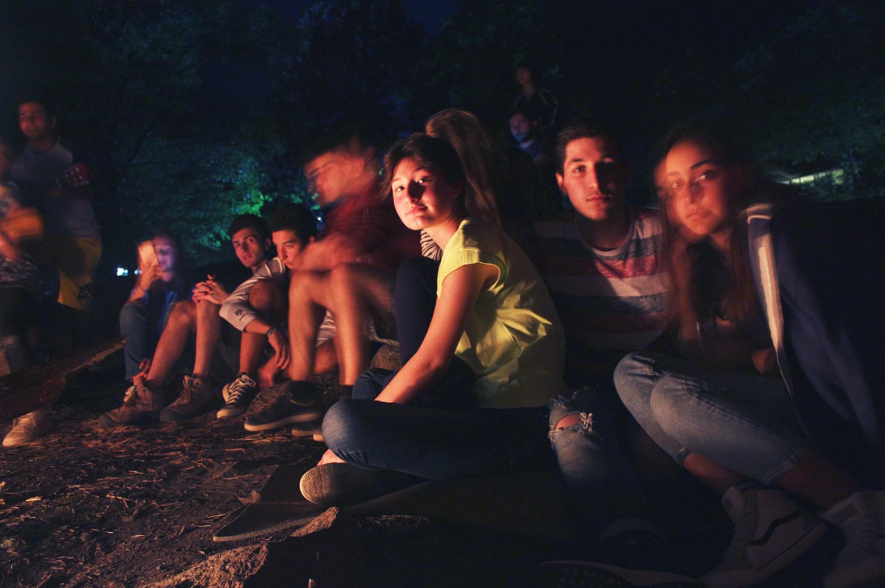
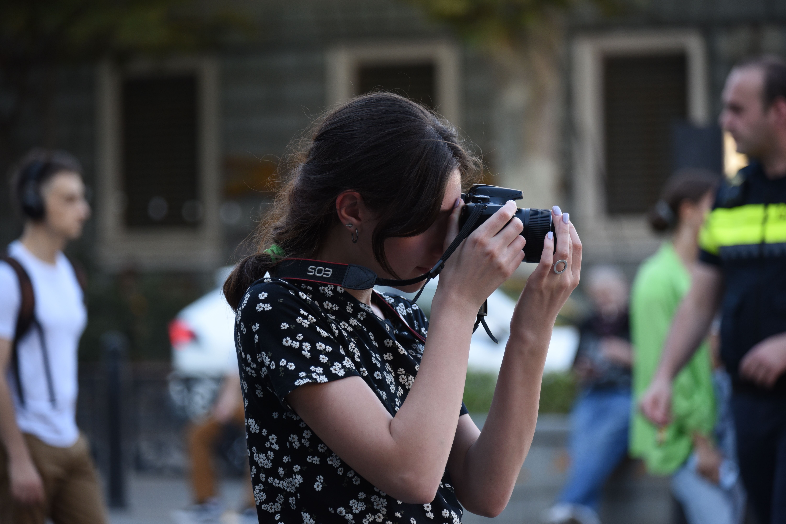
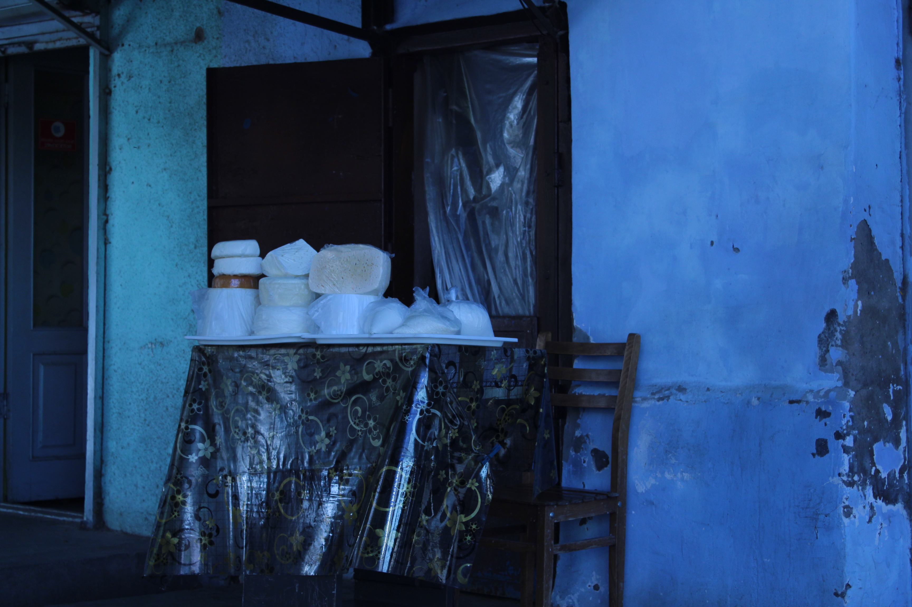
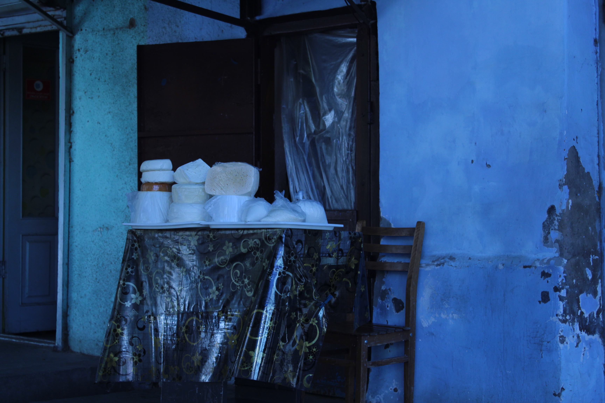

This page is about me

In the tender embrace of nineteen years, I, born on the 30th of December
2004, find solace and delight in the rich tapestry of life's pursuits.
From the earliest whispers of childhood, the symphony of my learning has
been diverse and harmonious—dancing, drawing, and even the gentle art of
knitting. Today, the melody continues at university, where the vast
expanse of knowledge unfolds before me, a myriad of possibilities
waiting to be explored. Uncertain of the exact path my future profession
may take, what remains crystal clear is the sheer joy I find in the act
of learning itself.
An enchanting paradox lies within me—I am a
seeker of knowledge without a fixed destination. The beauty lies not
just in the destination but in the journey, and it is this philosophy
that guides my explorations. As the chapters of my academic pursuits
unfold, the essence of each subject becomes a brushstroke on the canvas
of my evolving self.
And now, let me open a portal to a cherished
period in my life through the lens of a talented photographer. These
moments captured are a testament to the beauty of existence. However,
the story doesn't end there, for I too am learning the art of
photography. In sharing my works, I aim to offer glimpses into the world
as I see it—a kaleidoscope of emotions, colors, and stories waiting to
be unveiled.
Here I am, just capturing a moment.
I studied photography at university. We often had assignments where we had to go out and find or take different interesting shots. This photo was also taken by an unknown photographer while performing one of the tasks. It was amazing when he stopped me and told me that he had my photo and could take mine. It turned out to be a very pleasant moment. This photo was taken by a very good photographer. However, I am also learning photography and I will share my works with you.
 

As I stand at the threshold of my journey, a 19-year-old dreamer navigating the vast expanse of knowledge, I am fueled by an insatiable thirst for learning. From dancing and drawing to the intricacies of university studies, my pursuits are ever-expanding, shaping the mosaic of my passions. Embracing the uncertainty of my future profession, I find solace in the knowledge that the act of learning, in itself, is a lifelong triumph. My love for hiking and camping echoes the simplicity of joy found in nature's embrace. In the realm of photography, both as an admirer and a budding artist, I strive to capture the essence of fleeting moments. As the journey unfolds, I acknowledge that I am a perpetual student of life. With unwavering determination, I shall persist in my pursuit of knowledge, hoping to dance through each challenge, unravel the mysteries of my chosen paths, and ultimately achieve the kaleidoscope of goals that dance on the horizon. The adventure continues, and I embrace it with open arms.I still have a lot to learn. I'm not going to stop and hopefully I'll achieve all my goals.